Brief - There has been a steady growth in the adoption of social media platforms these days.
Some of the most popular social media platforms that exist today are Facebook, Instagram, Tinder, meetup.com and many more.
All these platforms fall under the same umbrella of ‘getting social’ or ‘getting connected’, with each having a specific feature that targets a niche group of audience.
These niche group of audience can be ‘people who want to find friends, people who want to date and people who want to find professional contacts etc’.
This tells us people want to interact with someone to establish a relationship whether it be a friend, a partner or a professional contact.
Similarly, our app is targeting a special niche group of audience, ‘People who want to find a friend and do an activity together’.
It’s an app where tinder meets meetup.com. In other words, we have designed a creative solution for people who want to find a friend to do an activity with.
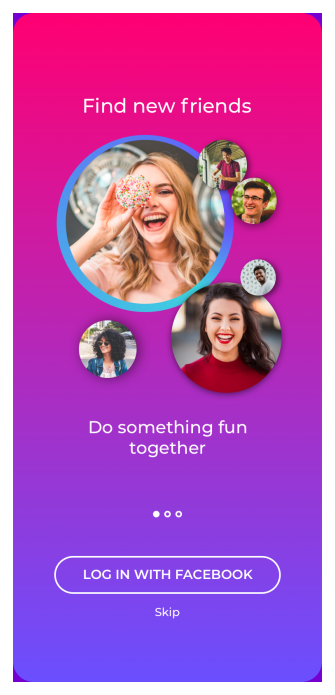
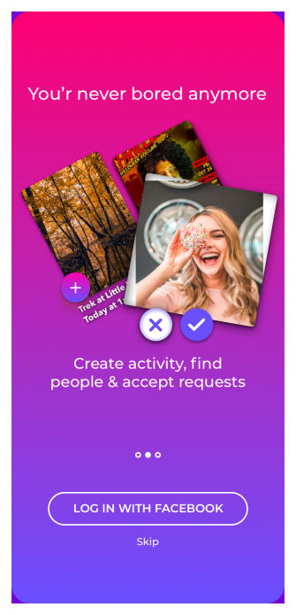
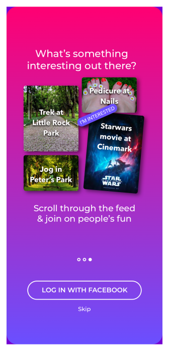
Problem Overview
Most social media platform’s in today’s world are designed for people who want to date or to attend in-person events with similar interest.
None of these platforms creates a casual set-up or a platonic environment.
They are either overcrowded with too many unknown people or people who want to date.
Both these situations are nervous, formal and tight. Meetup groups may be right for meeting like-minded people.
Facebook groups may be good for finding out about local events. Tinder may be right for finding a partner to date.
But what if you want to find someone just for a morning coffee or hanging out on a Friday evening? What if you’re new to a city or work remotely and have no friends?
What if all your friends are busy and you want to meet someone new and fresh but not dating?
Solution Overview
The world is filled with people who want to meet other people, who want to do a fun activity, who wants to socialise casually.
To address this need we created WeDoo, a platform which enables people to meet casually.
A platform where Tinder meets Meetup.com. Through WeDoo, we want to create a platonic relationship with fewer expectations than a romantic or formal relationship while at the same time being able to do what you enjoy the most.
In this platform, you can post an activity that you like and find someone to do that activity with them. You can also request to join on other’s fun.
Research
1. Understand the Task
I started off my design process by brainstorming initial ideas in order to understand the reason behind people using social media platforms at a higher level and to write down my initial thoughts.
With research being the first part of my design process, I wrote down an overview of my research process to determine my methodology, target participants and questions to ask.
In addition, I thought of some early hypotheses and assumptions based on the prompt.
2. Survey
This is a very important step in my research process. This is the data what my design will be based on.
Both quantitative and qualitative data is useful in understanding user needs.
I wanted to understand who my users are, what my users want, why they use social media platforms, what are their goals and more so that I can tailor design based on their needs.
3. Competitive Analysis
I performed a competitive analysis to compare data about social platforms (and companies) in the marketplace.
I wanted to understand the platform’s strengths and weaknesses in order to make more informed decisions about my product strategy.
I focused mainly on understanding what the main feature of each product was and what they marketed themselves as and what needs of their audiences are they fulfilling.
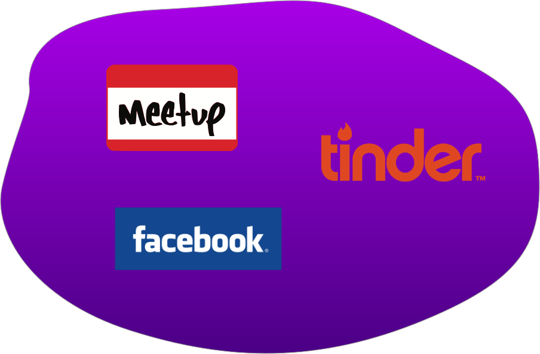
4. Persona
After analyzing the survey results, several trends emerged that painted a picture of who my target users will be for WeDoo.
Based on this, I created three personas who exemplify my primary user types.
I made sure I had a picture of my persons stuck on my wall so that every single day I’m reminded of who my users, their pain points and they’re goals while designing the platform for them.
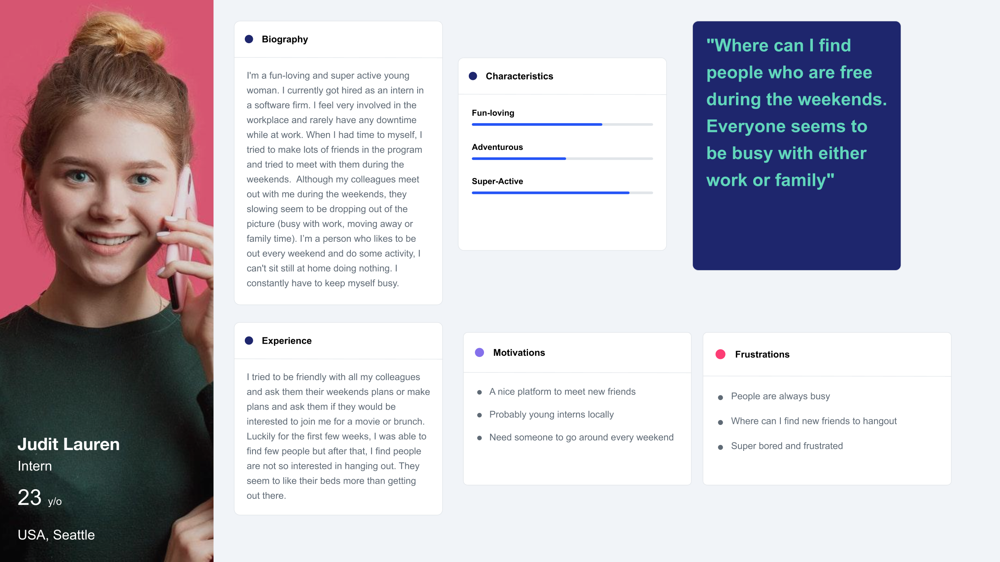
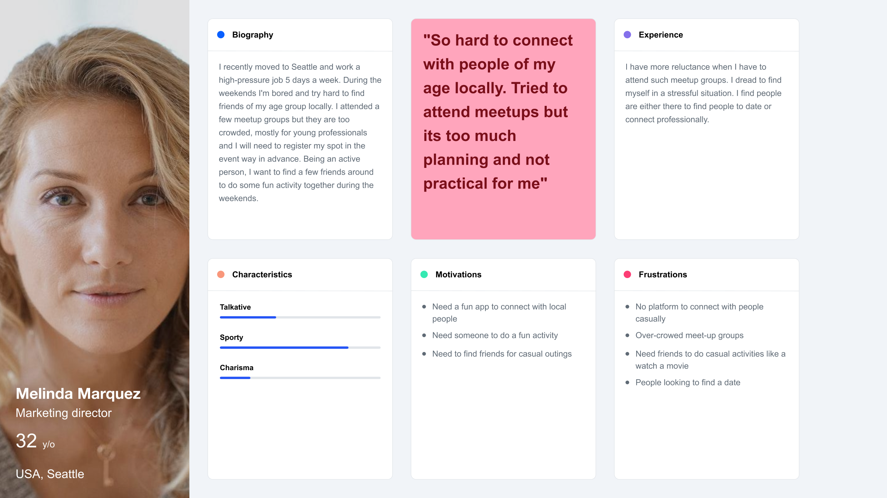
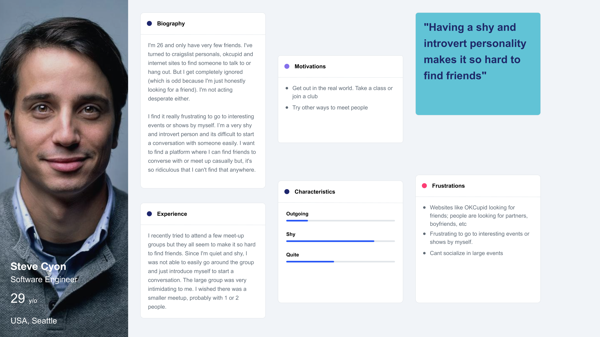
5. User Stories
Keeping the user goals in mind, I created user stories.
The user stories helped me establish the project flow, what features I should begin with and end with.
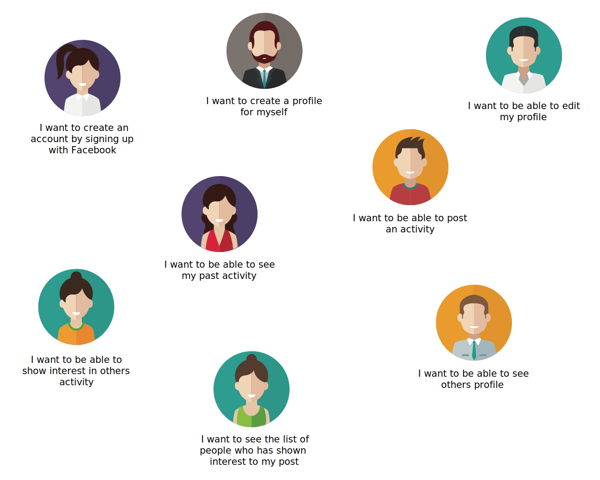
Information Architecture
1. User Flows
To visualize how WeDoo users would accomplish key tasks, I created user flows capturing each of the MVP user stories.
I created two streamlined user flows that outline the users 1) Users who post a WeDoo activity and receive interest/request for their post 2) Users who send interest/request for others activity post.
Important questions to answer includes,
What is the user trying to accomplish? What are their primary and secondary goals? I thought it is important to keep the user’s goals and fears in view throughout the process.)
How can I make the transitions between stages be smooth? How will the user move through the app, website, service without getting stuck?
2. WeDoo Site Map
To see how the user flows translate into pages and see how many pages will be needed, we constructed a Site Map.
My goal here was to make sure that the user’s transition between the pages was smooth.
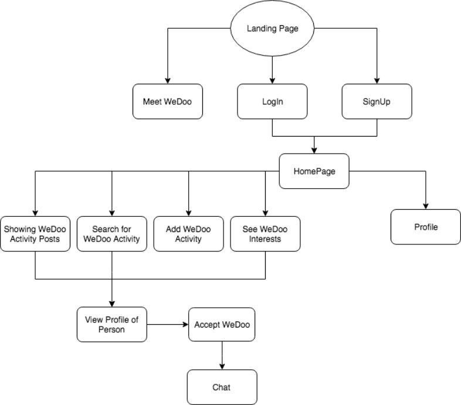
3. Content Strategy
I think is it very important to have engaging content to bring back the user.
Content and design go hand in hand. According to me, content is equally as important as any animation and design to keep the user’s attention as well as to make sure that the user comprehends a clear understanding of what the product is trying to communicate.
"Words are essential for helping users accomplish their tasks, and by thinking about them while you sketch, you’ll uncover problems early and be able to move faster later."
Ideate
Sketches and Wireframing
At this point, I had an understanding of what features my app should contain to start off as an MVP.
I sketched wireframes to test various layout options and do some brainstorming on how the users will interact with the screens.
Once I got a clear picture of each screen, I translated my hand-drawn sketches to wireframes in Sketch.
The process resulted in some tweaking of the site map as issues arose.
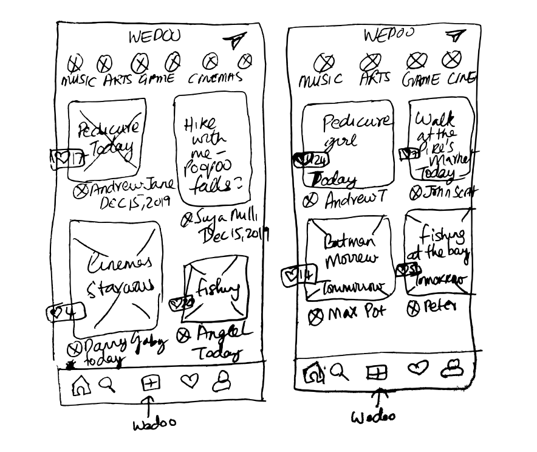
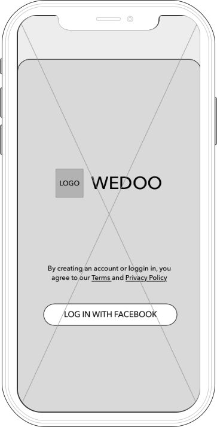
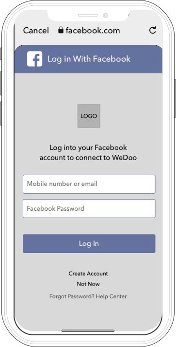
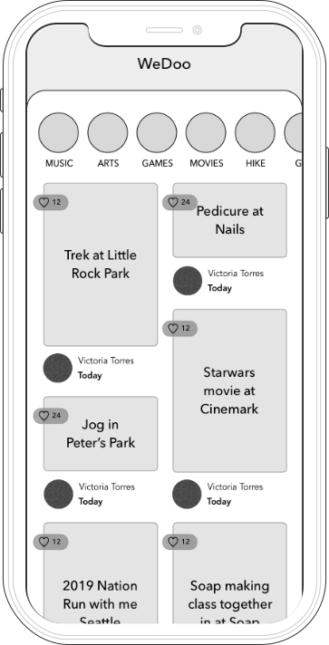
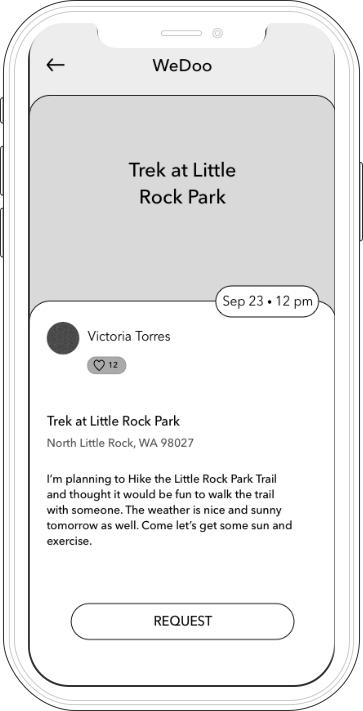
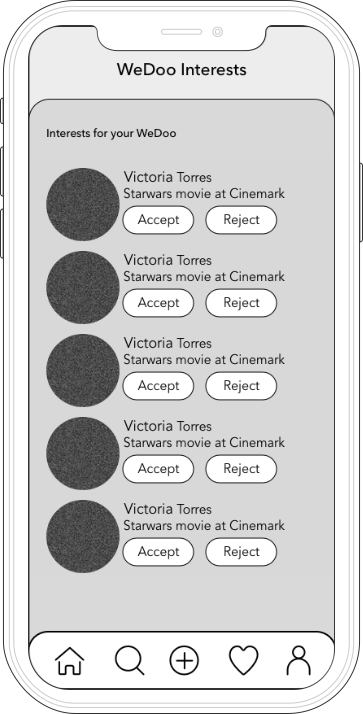
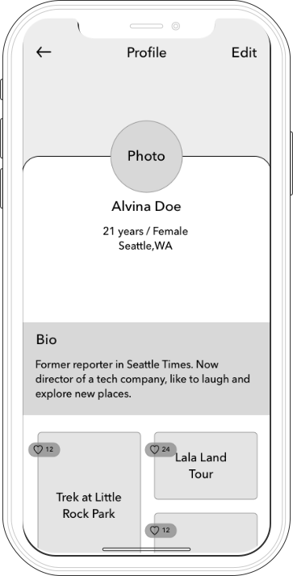
Visual Design
1. Logo Name and Design
I came up with the name “WeDoo” for my app because it refers to ‘two people doing things together’.
Since my app is about finding friends and doing an activity of your choice, I thought We+Do (we do an activity together) would be a fun way to name it.
To give it a twist and make it stand out, I added an extra letter ‘O’ to the ‘Do’.
For the logo design, I started off by sketching a few logos in Sketch. My goal was to make sure that the logo communicated about the product and wanted it to be fun and cute.
Here are a few iterations of the logos I designed.
Final Choice after usability testing - I decided to go with the 'single fish'. I felt that it perfectly communicates what WeDoo is about.
"Fishes always travel together as groups. Here I want to say that A single fish is in search of a new friend to swim together and do a fun activity :)"
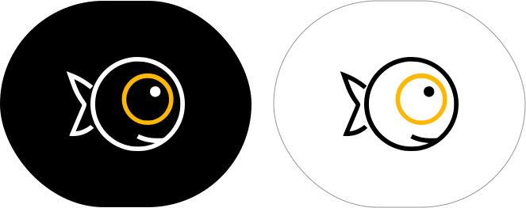
2. Colors
I wanted the colours to be bright, fun and exciting and thus I went with colours like pink, yellow, purple and grey.
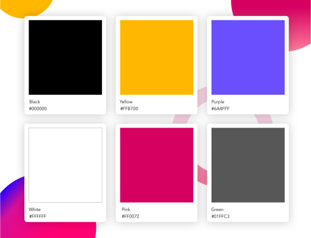
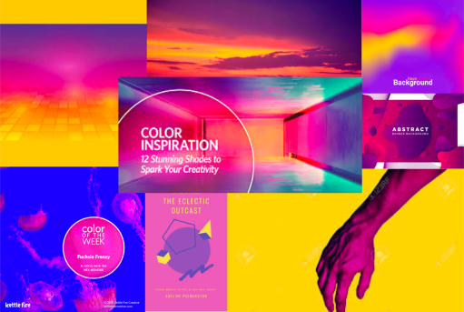
3. Type
Since our platform is more for the younger age group, I used the font “Avenir Next”, which gives more of a younger and modern feel.
It is also a versatile typeface which can be used for headlines and display type, or it makes a perfectly fine body type.
I also used Montserrat typeface for the headings, because of its beautiful bigger and bolder look.
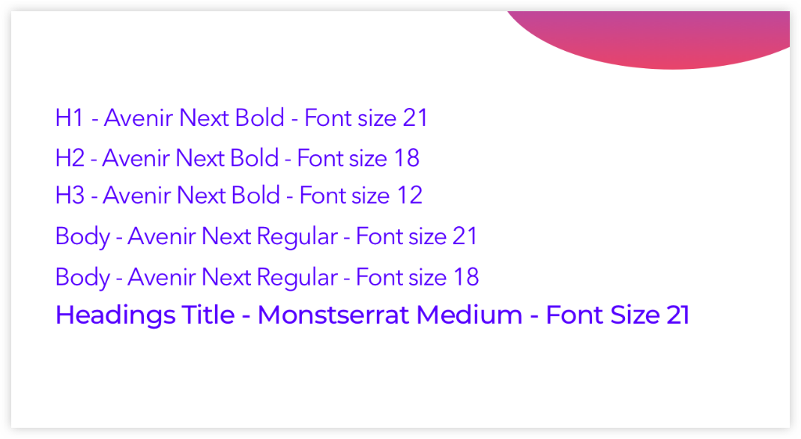
Design Mockup and Iterations
With the stylesheet at hand, I sat down with Sketch and started designing the Hi-fi mockups keeping the users and guidelines in mind.
My hi-fi mockups went through several iterations and revisions which I received from my mentor, the critique team and by my peers.
The WeDoo Activity Feed
One of the main challenges I faced was 'where should I place the text for each activity?'.
Initially, I placed the text on top of the feed photo but later I received feedback that this would make it difficult for the users to read and would tire their eyes.
Then, I tried several layouts on where the text would go and how would display the date and time for each activity.
Request Received Page
I wanted the accept icon to be fancier so I added a heart icon and thought this would be more fun. I changed the icon to a simple ‘tick’ icon to be able to easily understand by the users.
Prototype and Testing
Using InVision, I created simple clickable prototypes for testing. I dropped them into Maze, where five people completed the tasks on their own time and I led two one-on-one sessions.
Final Deliverables
High-fidelity mockups
Style guide
Assets for developer hand-off
Conclusion
This project gave me the valuable lessons of test early and test often.
From logos to colours to the tiny details of the layout, you don't always see the best choice or the right choice because as the creator of each element,
you are too close to the material and not capable of reviewing - exactly why you need many sets of fresh eyes.
Same as all other projects, I would like to expand the design and coding to the entire website had I had more time.
If you would like to see the WeDoo come to lifee then please contact me and I’m happy to collaborate :)